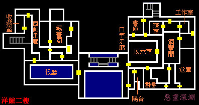
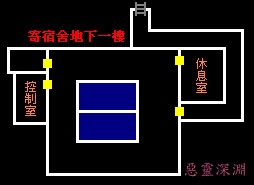
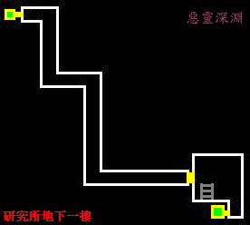
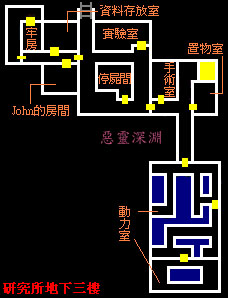
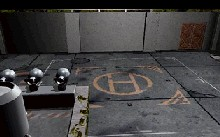

|
惡靈古堡-----地圖攻略─Jill篇(Easy篇)
|
|
惡靈古堡-----地圖攻略─Jill篇(Easy篇)
|
|
本篇攻略的進行是以取得Best
Ending為目標，想試試不同結局的玩家可自行省略變更部分攻略內容。
進入洋館大廳後發生劇情，Jill和Barry前往飯廳調查，由飯廳底部的門離開，在西側走廊上首遇僵屍 ，此時趕緊轉身離開，回飯廳讓Barry解決牠，僵屍啃咬的Kenneth的屍體有兩副彈匣。 遇過殭屍後回到大廳，發現Wesker不見了，繞柱子後面跑一圈後找不到人，Barry會給Jill一個簡單的 開鎖工具，但是不會出現在道具欄裡。大廳有打字機，旁邊有色帶。 大廳休息室旁邊的那一扇門一進去就看到女神像，推梯子到石像後面，上梯子拿取地圖。附近有一 個可以推動的櫃子，後方有一隻裝死的殭屍和色帶。 繼續往裡面走，東側走廊埋伏有兩隻殭屍犬，這裡沒有裝東西的櫃子推動後下面有手槍子彈。
通過走廊後首先看到一株綠色藥草，經過的第一扇門還不能開﹔第二扇門是浴室，裡面什麼也沒有 ﹔第三扇門有機關，內部牆上放有散彈槍，拿下來之後觸動機關，出門發現上頭天花板緩緩往下壓 來，趕快到出口門邊，等到天花板到一半時對門開槍，Barry就會來救你囉（之前先去過二樓陽台的 人Barry不會出現，必須要先拿到壞掉的散彈槍來換，否則會game over）﹔最後一扇門到了另一個走 廊。往右側的門走可以到一樓東側置物室，一扇門不能開，左側的門通往畫廊，剩下一扇暫時不用 理他。 畫廊有許多烏鴉，只要玩家不開槍就不會激怒他們（也不要按錯機關），這裡共有八副畫，最接近 門最大的那一個並沒有按鈕，其他七個要依照片內容年齡由小開到大，成功後在最底部的畫後面拿 到星之幣。 置物室門口有綠色藥草，裡面有BOX和打字機，最重要的是拿到除草劑。從旁邊的樓梯上二樓。
 這裡右手邊通往之書庫的門只能從另一方向通行，想去得繞點路，從ㄇ字走廊的門到書庫，桌上有 植物學?關於具有藥效的植物?。ㄇ字走廊上的門都鎖著，直接到大廳二樓。在此遇見Barry（Best Ending路線，其他路線可能碰不到），得到硫酸彈。到東側的陽台，陽台上Forest的屍體有榴彈槍。 由東側門到二樓飯廳，這裡有一座石像，將殭屍解決後把石像由沒有欄杆的地方推下去，從另一側 門離開。下一個地方有往下的梯子，來到一樓西側置物室旁。 帶著除草劑前往溫室，將除草劑倒入一旁的馬達水槽中把植物殺死，玩家就可以拿取後方牆上的鎧 之鑰匙，還有兩株紅色藥草、四株綠色藥草。
回西側置物室的隔壁房間，這裡有手槍子彈、壞掉的散彈槍(之前沒去一樓東側拿散彈槍的玩家請帶 著這隻去換吧)，桌子的抽屜放有散彈。 綠色走廊上的飼育員的寢室，裡面有手槍子彈、散彈和飼育員的日誌。 打開通往一樓西側走廊的門，前往飯廳。在飯廳找到之前從二樓推下來的石像，碎片中有一顆藍寶 石，把寶石拿到之前綠色走廊上 的一間小隔間，將藍寶石嵌入老虎石像的眼睛，得到風之幣。 回飯廳拿下壁爐上的盾牌，往酒吧。酒吧裡有一個可疑的櫃子，推開後找到樂譜，拿到鋼琴前使 用，彈完後頭的門開啟，裡面一個雕像下方有黃金盾，可是拿取之後門關上了，只要用在飯廳到手 的盾牌替代即可開門。拿黃金盾到飯廳壁爐使用，可在大鐘後面得到盾之鑰匙。
大廳的右側有兩個門，通往休息室的那一個可以不進去，這裡還是說明一下。這個房間鏡子前面有 手槍子彈，轉角埋伏一隻僵屍，底部的桌子裡面有散彈。 再往內是有一面大鏡子的更衣室，可以拿到綠色藥草兩株和色帶，剩下的門必須等到破關時拿到更 衣室鑰匙，下次遊戲才能進入。 再一次經過東側走廊，將剛剛無法開啟的門打開（浴室旁邊）通往外面，外面有六株綠色藥草。 由置物室旁的樓梯上樓，右手邊通往之前來過的書庫的門只能從另一方向通行，想去得繞點路。 上樓梯左手邊有兩扇門，第一扇又通往兩扇門，右側是寢室，櫃子上有打火機，床旁有紅色藥草、 手槍子彈﹔左側是工作室，按下牆上的甲蟲裝飾可將水箱的水放掉，把空的水箱推離好將大櫃子往 水箱原本的位置推，後方有榴彈，桌上有某研究員的遺書，牆上外套有色帶。 回到樓梯的走廊，底部的房間有一株綠色藥草，壁爐前使用打火機，拿到二樓地圖，鋼琴間的門還 不能開。 經ㄇ字走廊往展示室，這裡地上有兩個洞一個開關，將兩尊石像推動堵住洞口再開開關，拿到太陽 之幣。 到ㄇ字走廊上通往閣樓的門，進去後可以看到兩株綠色藥草，轉彎看到躺在地上的Richard，原來他中 了蛇毒，必須到一樓西側置物室去拿血清（從二樓過去比較快）， 回來後將血清給他使用（如果太 慢的話Richard直接死亡，失去Best Ending的條件），沒想到還是來不及而死亡，屍體上有手槍子彈。
再往內，先往轉彎到底的門，用打火機點燃桌上的蠟燭，桌上有色帶，櫃子有手槍子彈，推開可疑 的櫥櫃，裡面有硫酸彈（如果沒有點燃蠟燭就拿不到）。 接著往倉庫，這裡要和大蛇對決，附近有散彈，擊敗他後在他逃離的地方找到月之幣。
四個金幣都到手了，還記得一樓畫廊附近有一扇門還沒去嗎？拿著四個金幣回到那裡，打開通往長 廊的門，有一隻殭屍犬駐守，在底部使用四個金幣打開門到雜物間，將梯子推到牆邊拿取四角曲軸 棒，接著前往到洋館庭院。
先來到花園，等待著的是兩隻殭屍犬，還有三株綠色藥草、兩株藍色藥草、兩株紅色藥草，左巷內 的升降梯還不能使用，但電梯前有地圖。往下一個地方。 這裡的橋被水阻隔過不去，旁邊有一個小孔，使用四角曲軸棒打開水閘，過橋搭升降梯到中庭。
中庭沒有什麼值得流連，直接離開往地圖上的長走道。走道上有兩株綠、藍色藥草，到寄宿舍。
一到寄宿舍先看到一尊石像，前方角落有三株藍色藥草，將石像推到置物室旁邊，地上有一個洞的 地方，如果沒這麼做會被植物的藤蔓阻止無法前進。
置物室裡有榴彈、急救噴霧、BOX和打字機，001號房床上有紅書，桌子抽屜裡面有散彈，這裡的浴 室把浴缸的水放掉，找到控制室鑰匙。
餐廳有大蜘蛛，桌上有色帶，角落木桶上有手槍子彈，角落撞球桌透露著某種訊息，像是密碼...... 經過走廊來到藥品室前面，角落懸掛著一個蜂窩，下方的桌子上有002號房鑰匙，拿到了就快跑。
使鑰匙打開002號房，房門旁的石像推到底可以拿到三株綠色藥草。 002號房的浴室洗手台上有手槍子彈，這裡的抽屜裡面有散彈，牆上有地圖，床上有植物42號報告， 將房內的櫃子推推看，找到一條往下的梯子。
 地下一樓的走道上要玩推箱子遊戲，應該不難，把三個箱子都推到阻隔玩家的水中就可通過，轉彎 處有兩株綠色藥草。
這一個大空間因為水槽破裂積滿了水，跑到一半鯊魚會破缸而出，趕緊衝到控制室有鑰匙打開進去 ，控制室裡閃著紅燈的地方有一個把手，往下拉後積水退了，附近牆上有一個紅色開關，可以打開 隔壁的門。 水退了之後，發現鯊魚都離水失去了攻擊力，可以輕鬆將他們擊敗，但是實在沒有必要。
控制室隔壁可說是個彈藥補給庫，有兩副手槍子彈、散彈，003號房鑰匙。 回到一樓003號房，浴室有一隻殭屍，打敗後會掉落火炎彈，缺彈藥的人可以進去，書櫃看起來有點 怪異，調查後得到"V-JOLT"報告，放入紅書替代，門出現了，進去後就會碰上植物42號。 Jill請努力的戰鬥，打敗牠一次後會被牠抓起來，Barry帶著火炎放射器趕來救援，離開前別忘了帶走 壁爐裡的兜之鑰匙。 回到走道上時碰到Wesker，被要求回洋館重新探索一遍，所以帶著兜之鑰匙回去吧。
才剛回到洋館畫廊前就碰上了棘手的怪物──獵人，事實上現在整個洋館都佈滿的獵人，玩家要格 外小心。 打開畫廊對面之前無法開的門，裡面一片漆黑，調查桌上打開電燈，桌上有軍用手槍子彈，書櫃上 有 最後之書，調查這本書發現裡面有鷹之金幣。 出去轉彎到東側置物室，Barry在置物室門口貼了一張字條，原來他貼心地替Jill留了一些東西，進置 物室在地上有硫酸彈、手槍子彈、急救噴霧可拿，在此整理裝備準備打大蛇。
上二樓到之前無法進入的鋼琴間，調查鋼琴後得和大蛇決鬥，勝利後調查地板的洞，Barry趕來，讓 Jill攀爬繩子下去，沒想到一時失手，於是Barry去找另一條繩子。Jill最好在原地等Barry回來，若是此 時下樓梯到地下一樓就會失去Best Ending。
Barry回來之後拉Jill回到鋼琴間，從他那裡得到通路密碼。到洋館二樓西側的收藏室去吧。 收藏室桌上有指令，櫃子上有軍用手槍子彈、散彈，將梯子推到鹿頭標本下方，到門口去把電燈關 掉，調查鹿頭可得到紅寶石。 打開收藏室旁邊的門到二樓的西側走廊，走廊上除了殭屍還有兩株綠、藍色藥草。下一個走廊上有 一間小房間，裡面有重要的蓄電池，還有榴彈兩袋。 藏書閣裡可拿到剪貼簿，書桌抽屜裡面有軍用手槍子彈。推開書櫃，裡面的房間有手槍子彈、色帶 ，窗外可以看到救援直昇機在停機坪上。
藏書閣裡面一層的書房有一尊可移動的石像，先調查牆上的女神像（胸口有紅寶石的），打開開關 ， 再把石像推到開關打開的燈光照射處，旁邊會開啟一個小門，裡面有MO磁片。
搭乘電梯到洋館地下一樓廚房（也可以尋原路回二樓收藏室前），廚房電梯前有一隻裝死的殭屍， 另一扇門不能開，只好走通往樓梯的那一扇，雖然有殭屍來襲，不過只有一隻不足懼。 從樓梯上到一樓，一樓的電梯不在這一層無法搭乘，此處的門通往一樓的西側走廊。將紅寶石拿到 一 樓綠色走廊的小隔間（之前放藍寶石的地方），把紅寶石嵌入石老虎的另一隻眼，可取得軍用手 槍。
現在已經拿到蓄電池必須回到洋館庭院的中庭，記得帶上四角曲軸棒，路上還是要小心獵人。 庭院中庭有一個無法啟動的升降梯，將蓄電池嵌入旁邊牆上的洞內，搭乘升降梯到花園的升降梯。 到橋附近用四角曲軸棒重新啟動機關把水引回來，然後回花園搭升降梯到中庭，此時中庭中央的梯 子總算露出來了，由梯子下到庭院地下。
地圖上標示的數字是玩家必須前去的順序，１往２會碰到Barry，尋問是否一起行動，答”Yes”，再 問是否他走前面，答"Yes"，不久後聽到一聲槍聲，在３的地方和Barry會合，發電機旁邊有散彈和急 救噴霧，在４遇到Enrico，可惜就在他要說什麼的時候被槍殺了，屍體上有手槍子彈，追尋兇手的路 上地上有一支六角曲軸棒。（如欲拿到Barry's的照片，尋問是否一起行動時要答”No”，以後拿到）
庭院地下在事件後充滿了獵人，千萬不要戀戰，趕緊回到１，現在要前往５，在１處有打字機，中 途無法前進時在旁邊牆上的小洞使用六角曲軸棒即可通過，５的地方路上有一顆大石頭，靠近它後 轉頭離開會觸發石頭滾來，趕快躲到門前安全的地方，原先石頭擺放處的後方有火炎彈。由石頭開 出的路往６，但要小心獵人埋伏。 ６這裡有黑蜘蛛駐守，戰勝後拾取附近的閃閃發亮的野戰刀把通往７的門上的蜘蛛網清乾淨。 ８的地方有打字機和BOX，一株藍色藥草、急救噴霧及色帶。帶上鷹之金幣、六角曲軸棒離開。９ 處也有一顆大石頭，在牆上的小洞使用六角曲軸棒使洞口向左，再照剛剛的方式引發石頭，後頭有 MO磁片、地圖，，到１０。１０的牆上也有一個小洞，使用六角曲軸棒，發現有一處的牆會凸出， 用曲軸棒復原，將石像推到該處，再次使牆凸出後復原，玩家即可推離石像，將石像推到地上開關 的地方，然後在牆上打開機關的地方拿到最後之書，調查最後之書得到狼之金幣。搭乘９的升降梯 來到洋館庭院的噴水池。 噴水池旁有藍、綠色藥草各兩株，將兩枚金幣放上噴水池的兩側打開通路，可以從噴水池中央樓梯 下去，搭乘電梯到研究所地下一樓。
 地下一樓的門還不能打開，只好下樓梯到地下二樓。
在置物室整理裝備，將MO磁片拿出來，置物室外面有幾隻殭屍和兩株綠色藥草，會議室前桌上有 MO磁片，下樓梯到地下三樓。
 地下三樓通道上的裸體殭屍是打也打不完的，所以不用理他們。先到John的房間， 打開門旁的紅色開關（一般燈光），桌上有某研究員的信，得知必須輸入John，而密碼是Ada，附近 有綠色藥草、手槍子彈，推開櫃子，打開藍色開關（紫外線燈），調查牆上的畫，出現單字MAN、 WOMAN、APPLE、TREE，與方才拿到的某研究員的信對照，拼湊成MOLE。 先到實驗室去開鎖，實驗室地上有一捲幻燈片，不一定要拿。打開電腦輸入John、Ada，選擇樓層， B2的開鎖密碼是MOLE，將兩個樓層的鎖都打開後回地下二樓，進入會議室。 進門左側櫃子上有，會議桌上的投影機可以觀看剛剛拿到的幻燈片（會有驚為天人的發現喔，此段 幻燈片雖不是File，可是本站將其收錄在File資料中），在投影布幕旁邊牆上有一可疑的機關，調查後 打開開關，在移動的柱子後面找到動力室鑰匙，另一個角落有研究所‧警備系統資料。 地下室三樓可以先到資料存放室，牆上的凹陷處有Fax，在桌上的機器使用MO磁片得到密碼０１， 必須收集到三組密碼以後才能去牢房解救同伴Chris獲取Best Ending。 在手術室前的置物室整理裝備，這裡有藍、綠色藥草，火炎彈、色帶、打字機和BOX，MO磁片還是 要帶在身上。 手術室這裡有紅色藥草、散彈，地上有一個紅色按鈕和兩個洞口，可以知道又要玩推箱子的遊戲， 動動腦筋把兩個箱子堵住動口後再把梯子推到按鈕上（按壓按鈕會放出毒氣），上梯子爬過通風口 到停屍間。停屍間有軍用手槍子彈，在桌上機器使用MO磁片，獲得密碼０２。 接著到動力室，動力室切割成三間，都有吉美拉在駐守，第二間進門到底有使用MO磁片的機器，取 得密碼０３，第三間在電腦面板前打開開關，然後回第一間打開電腦面板的開關（先開亦可）。
此時電梯的動力恢復，整理裝備準備打Tyrant。在電梯前按下一旁的按鈕，Barry出現，兩人搭乘電梯 到地下四樓。
出電梯後遇到Wesker，然後進入實驗室和Tyrant決鬥，實驗室的地上有手槍子彈可拿（會發亮，除非 彈盡援絕，不然實在不需要），解決後調查電腦打開電子鎖離開（若為Best Ending則不要忘記去叫醒 Barry）。
兩人一起搭電梯離開，地下三樓兩人分開，Jill必須到牢房把Chris救出來，然後回地下一樓打開原本 打不開的門，道具欄須留一格。
在路上拿取蓄電池，道路盡頭的電梯旁使用，搭乘電梯到頂樓停機坪。 （值得一提的是頂樓停機坪是遊戲中唯一沒有地圖的地方喔。）  一到停機坪先拿電梯前箱內的信號彈，到停機坪上使用，此時直昇機還救援卻碰上了Tyrant，拿出最 強的武器拚了，只要最後記得去撿火箭砲給牠致命一擊，那就恭喜你破關了啦??（根據站長的試 驗，都不做攻擊的話火箭砲是不會出現的。還有，依據分歧的不同，也有不用打Tyrant的結局喔。）
未經許可禁止連結轉載 |
這裡是惡靈古堡的專屬網站，建議您使用1024*768以上解析度、IE7.0以上瀏覽，本站為繁體中文Traditional Chinese Big5編碼
惡靈深淵Biohazard Abyss